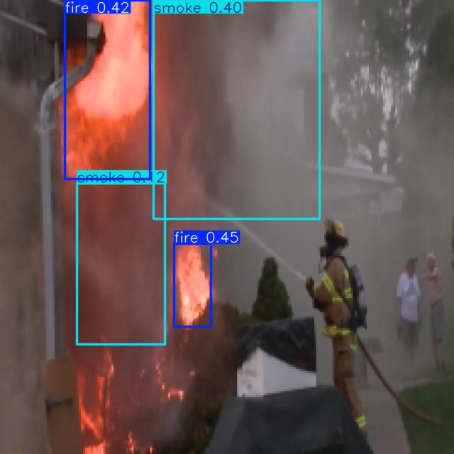
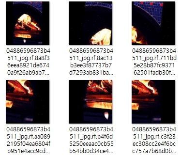
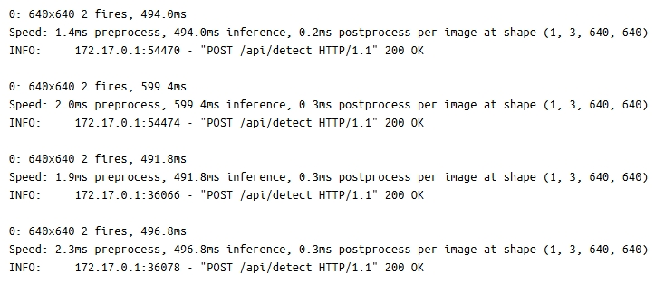
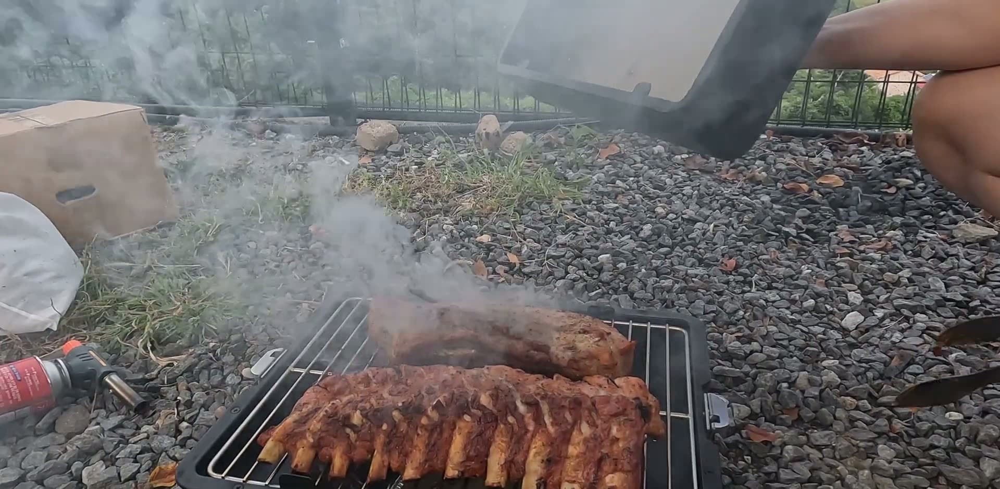
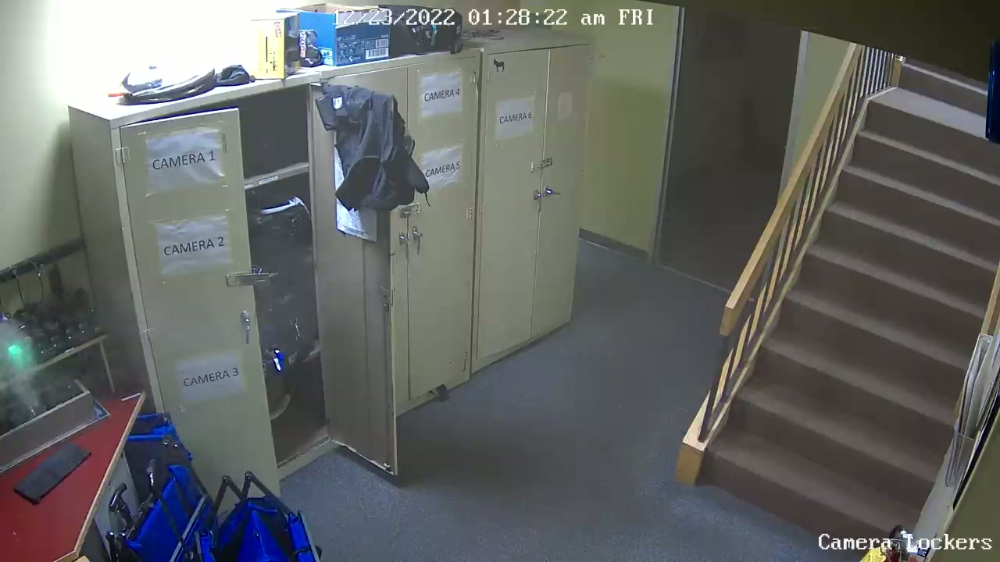
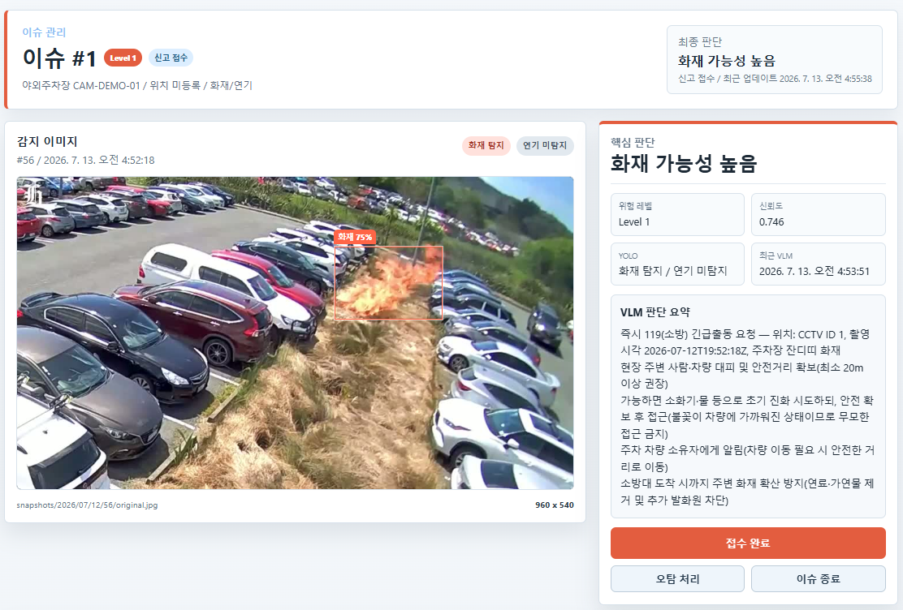

팀 리딩과 Pipeline 설계
프로젝트 기획과 일정을 관리하고, YOLO 후보 탐지와 조건부 VLM 분석으로 이어지는 전체 AI Pipeline 설계.
Real-time Fire Safety Intelligence
실시간 화재 안전 관제를 목표로, YOLO 기반 준실시간 후보 탐지와 필요한 순간에만 동작하는 VLM 맥락 분석을 결합한 AI 안전 관리 서비스.

00 / OVERVIEW
YOLO의 빠른 추론과 VLM의 맥락 이해 능력을 서로 대체 관계로 보지 않고, 각 모델을 가장 적합한 단계에 배치했다.
Object Detection이 화재·연기 후보를 빠르게 선별하고, 사건(Issue) 관리 정책이 상황 변화를 확인한 경우에만 VLM이 연속 프레임과 메타데이터를 분석하는 조건부 Cascade를 설계했다.
HOW IT WORKS
3초 간격의 CCTV 이미지를 분석 대상으로 수집합니다.
YOLOv12가 화재와 연기 후보를 빠르게 선별합니다.
같은 CCTV에서 발생한 탐지를 5분 단위 사건으로 관리합니다.
10초마다 재분석해 클래스 변화와 영역 증가 여부를 확인합니다.
상황 악화 시 gpt-5-mini가 탐지 시점 전후를 포함한 총 5개 연속 프레임과 탐지 정보를 분석합니다.
위험도와 근거, 권고 행동 및 119 신고 초안을 구조화해 제공합니다.
01 / CONTRIBUTION
데이터 구축부터 모델 비교, VLM 연동과 서비스 통합까지 이어지는 AI 개발 범위.
프로젝트 기획과 일정을 관리하고, YOLO 후보 탐지와 조건부 VLM 분석으로 이어지는 전체 AI Pipeline 설계.
서로 다른 Fire·Smoke 클래스 인덱스를 통일해 64,369장 규모의 데이터셋을 구성하고, 저조도·저채도 CCTV 환경을 반영한 변환 적용.
YOLOv11·YOLOv12·DETR의 Precision, Recall, mAP와 Docker 환경 Latency를 비교하고 서비스 목적에 맞는 YOLOv12 선정.
연속 프레임, Detection 결과와 CCTV Metadata를 해석해 위험도·근거·신고 문구를 JSON으로 반환하는 Prompt와 출력 계약 설계.
Object Detection 추론 API를 구현하고, 백엔드·클라우드 담당 팀원과 협업해 Azure 기반 서비스 흐름에 통합.
02 / DATASET ENGINEERING
Kaggle의 두 화재·연기 데이터셋을 통합하고 상반된 클래스 인덱스를 재정의했다.
기존 증강은 유지하면서 CCTV의 야간·저조도 환경과 색상 정보 손실을 고려한 흑백 변환을 추가했다.


03 / MODEL BENCHMARK
화재·연기 후보의 누락을 줄이기 위해 Recall을 우선하고, 3초 단위 Snapshot을 처리할 수 있는 Latency를 함께 평가했다.
후단에서 VLM이 재검증하므로 1차 모델은 최종 판정보다 빠르고 넓은 후보 선별에 집중했다.


04 / CONDITIONAL CASCADE
VLM의 맥락 분석 능력을 활용하되, 모든 프레임에 사용하는 방식에서 발생하는 지연과 비용을 사건 기반 호출 정책으로 제어했다.
Backend로 이미지 전달
Fire · Smoke 후보 탐지
5분 단위 사건 병합
10초 단위 재분석
상황 악화 시에만 호출
불꽃과 연기를 빠르게 찾을 수 있지만 요리 연기, 조명, 화재 원인과 주변 위험 요소까지 판별하기 어렵다.
이미지의 주변 맥락과 시간적 변화를 해석할 수 있지만, 모든 CCTV 프레임을 분석하면 응답 지연과 GPU·API 비용이 증가한다.
YOLO가 후보를 넓게 보존하고, 상황 변화가 감지된 사건만 VLM이 재검증해 각 모델의 장점을 필요한 지점에 사용한다.
05 / VLM CONTEXT ANALYSIS
Azure AI Foundry의 gpt-5-mini에 탐지 시점 전후를 포함한 총 5개 연속 프레임, YOLO의 클래스·점수·Bounding Box와 CCTV 위치·시간·ID를 함께 전달했다.
탐지 시점 전후를 포함한 총 5개 연속 프레임의 변화
Fire·Smoke Label, Confidence, Bounding Box
위치, 촬영 시간, CCTV ID
화재 여부, 위험도, 시각·시간적 근거, 대응 권고와 신고 초안

YOLO는 연기를 후보로 탐지했지만, VLM은 주변 맥락을 조리 상황으로 판단하여 신고 초안을 생성하지 않았다.

화염과 연기의 확산, 주변 공간을 종합해 실제 화재로 판단하고 위험도와 긴급 신고 초안을 생성했다.
두 사례는 조건부 Cascade의 동작을 확인한 정성 테스트이며, VLM의 일반화 성능을 나타내는 정량 평가 결과는 아닙니다.
단순 화재 여부를 넘어 visual_evidence, temporal_summary, inferred_cause, spread_risk, recommended_action, emergency_report_119 등의 필드를 정의했다.
구조화된 데이터의 일관성을 유지하면서 시각·시간적 근거와 추정 원인, 대응 정보를 함께 보존하고, 오탐 판단 시 신고 초안을 비우는 Guardrail을 적용했다.
06 / SERVICE RESULT
반복되는 프레임 탐지를 하나의 사건으로 관리하고 Detection, VLM 판단, 위험도와 대응 정보를 관제 화면에 통합했다.
VLM은 자동 신고 결정을 대체하지 않으며, 관제 담당자가 근거와 연속 프레임을 검토한 후 최종 신고 여부를 결정한다.

국내 CCTV 환경을 보완하기 위해 실제 화재 영상과 뉴스 이미지에서도 Fire·Smoke 후보 탐지를 추가로 확인했다.

YOLO 결과, 연속 Snapshot, VLM 상황 요약과 신고 판단을 하나의 사건 기록으로 제공한다.
07 / REVIEW
기존 컴퓨터비전 프로젝트에서 직접 학습한 모델로 시각적 특징을 검출·분할했다면, Burinake에서는 VLM을 도입해 이미지의 주변 맥락과 시간적 변화까지 해석 범위를 확장했다.
그러나 VLM을 단순히 추가하는 데 그치지 않고, 기존 Detection 모델과 VLM이 가진 서로 다른 강점과 비용을 분석해 역할을 분리했다.
YOLOv12는 실시간 후보 탐지에 집중하고 VLM은 선별된 사건의 진위와 위험도를 해석한다.
빠르지만 맥락이 제한적인 기존 딥러닝 모델과, 풍부한 상황 이해가 가능하지만 느리고 비용이 큰 VLM을 조건부 Cascade로 결합함으로써 최신 모델이 기존 모델을 대체하는 것이 아니라 상호 보완할 수 있음을 확인했다.
동일 CCTV의 반복 탐지를 Issue로 병합하고 상황 악화 시에만 VLM을 재호출하는 정책까지 포함하며, 모델 정확도뿐 아니라 Latency, 처리 비용과 알림 품질을 함께 고려하는 AI 서비스 설계 경험을 확보했다.
현재는 테스트 이미지 기반 데모이며, 실제 CCTV 스트림과 소방 신고 시스템은 연결되지 않았다.
운영 단계에서는 동시 요청에서의 VLM 처리량·비용 측정, 실제 현장 데이터 평가와 화재 도메인에 특화된 VLM 검증이 필요하다.
08 / STACK